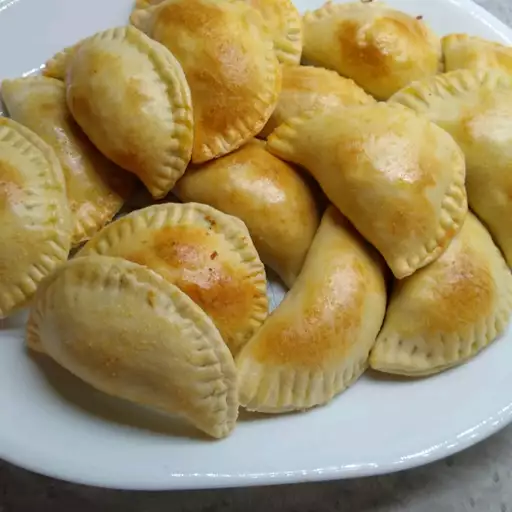

Empanadas de Pollo

Description
Transform your leftover cooked chicken into these tasty empanadas de pollo. This delicious, crispy, and tender Mediterranean-inspired finger food is easy to make!
Ingredients
- cooking spray
- 1 tablespoon butter
- 1 cup chopped green onions
- 2 cloves garlic, chopped
- 1 ½ cups chopped cooked chicken
- 1 teaspoon salt
- ½ teaspoon nutmeg
- ½ teaspoon ground black pepper
- 12 empanada pastry discs
- 1 egg, lightly beaten
Steps
- Preheat the oven to 400 degrees F (200 degrees C). Grease 2 baking sheets with cooking spray.
- Melt butter in a saucepan over medium heat. Add chopped green onions and cook until tender, about 4 minutes. Add garlic and cook for 1 minute. Mix in cooked chicken, salt, nutmeg, and black pepper; cook 1 minute more.
- Arrange pastry discs on a flat work surface. Dab a little water along the edges. Place a large tablespoonful of chicken mixture in the center; fold pastry over and press with a fork to seal.
- Transfer empanadas to the prepared baking sheets. Brush with beaten egg.
- Bake in the preheated oven until golden, about 20 minutes.